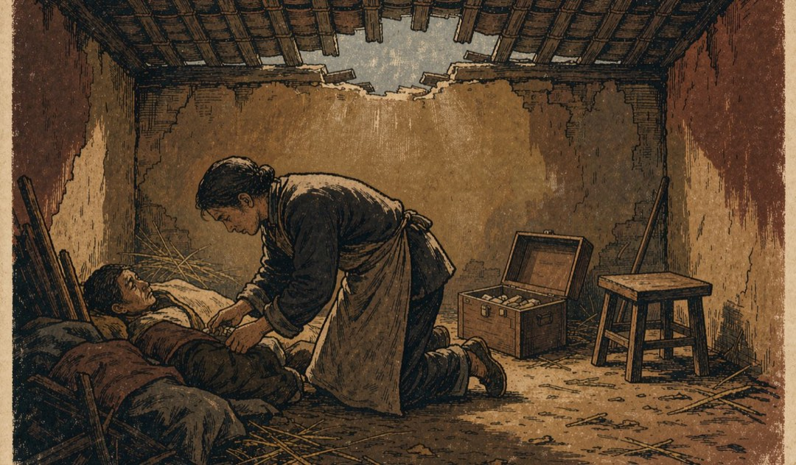
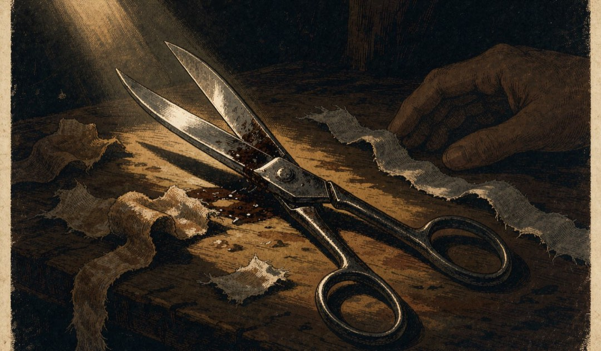
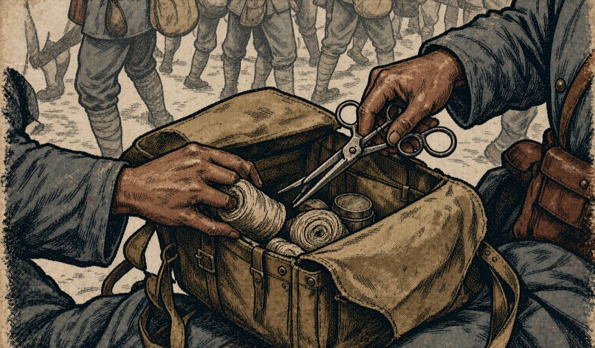
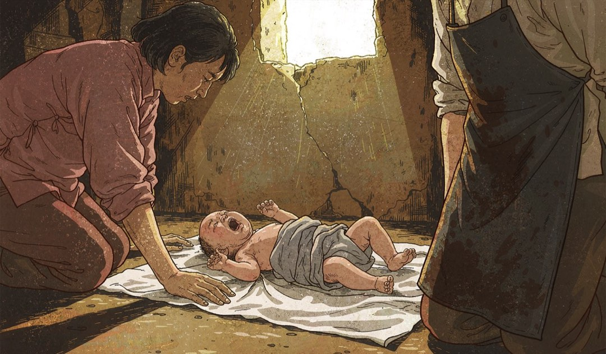

把生命剪开，也把生命拢住
剪刀
最轻也最重的一刀
红军女战士陈慧清临产那天，枪声从身后追上来。
红五军团军团长董振堂命令一个团顶住追兵。他拎着枪从阵地上跑下来，问还有多久能生出孩子。没人知道。

整整两个小时。
河边一间破屋里，医生蹲在地上。药箱里有一把剪刀。这把剪刀在长征路上大多数时候剪的是绷带、衣料、线头。那天它要剪的是脐带。

那天它要剪的是脐带。
孩子哭出声的时候，阵地上已经倒下了很多人。
董振堂火了。
剪断脐带的那一刀，是那把剪刀在这条路上做过的最轻也最重的一件事。
“你们瞪什么瞪？我们流血和牺牲不就是为了这些孩子吗？”董振堂 · 红五军团军团长

孩子哭出声的时候。
部队继续走。剪刀收回药箱，下一次拿出来剪的又是绷带。

它一直在药箱里，谁需要就递给谁。
那把剪刀后来还剪过很多东西。剪过草地上的草根，剪过雪山上下来的冻布，剪过伤员身上揭不下来的衣服。剪刀在长征路上剪过的东西，大多已经不在了。剪不断的那部分，跟着队伍走到了陕北。
本 章 完 整 原 文
第五章 剪刀
1935年，赤水河两岸。
红军女战士陈慧清临产那天，枪声从身后追上来。红五军团军团长董振堂命令一个团顶住追兵。他拎着枪从阵地上跑下来，问还有多久能生出孩子。没人知道。他又跑回阵地，一边跑一边喊：“一定要打出一个生孩子的时间来！”
整整两个小时。
河边一间破屋里，医生蹲在地上。药箱里有一把剪刀。这把剪刀在长征路上大多数时候剪的是绷带、衣料、线头。那天它要剪的是脐带。
孩子哭出声的时候，阵地上已经倒下了很多人。一些战士经过陈慧清身边，露出不高兴的神情。董振堂火了：“你们瞪什么瞪？我们流血和牺牲不就是为了这些孩子吗？”
剪断脐带的那一刀，是那把剪刀在这条路上做过的最轻也最重的一件事。
部队继续走。剪刀收回药箱，下一次拿出来剪的又是绷带。
那把剪刀后来还剪过很多东西。剪过草地上的草根，剪过雪山上下来的冻布，剪过伤员身上揭不下来的衣服。它一直在药箱里，谁需要就递给谁。
剪刀在长征路上剪过的东西，大多已经不在了。剪不断的那部分，跟着队伍走到了陕北。
“你们瞪什么瞪？我们流血和牺牲不就是为了这些孩子吗？”
——董振堂（红五军团军团长）在陈慧清分娩后对战士的怒斥（来源：s1）